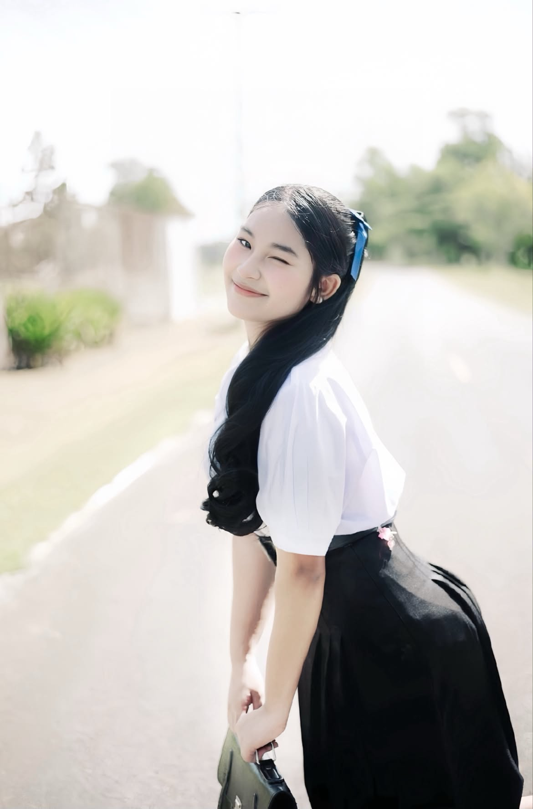

PERSON 01

นางสาวธาราวดี ช่างพูด
ความฝัน : ครูภาษาไทย
ประวัติส่วนตัว
ชื่อ-นามสกุล : นางสาวธาราวดี ช่างพูด
ระดับชั้น : มัธยมศึกษาปีที่ 6
สถานศึกษา : โรงเรียนทุ่งใหญ่เฉลิมราชอนุสรณ์รัชมังคลาภิเษก
ประวัติการศึกษาต่อ
มหาวิทยาลัย : มหาวิทยาลัยราชภัฏนครศรีธรรมราช
คณะ : ครุศาสตร์
สาขา : ภาษาไทย
ความสามารถพิเศษ
- มีความสามารถในการสวดโอ้เอ้วิหารราย
- เขียนเรียงความ
- เขียนคัดลายมือ
กิจกรรมที่เข้าร่วม
- เข้าร่วมกิจกรรมการทำพานไหว้ครู
- เข้าร่วมการแข่งขันมหกรรมวิชาการ กลุ่มสาระสังคมศึกษา
เป้าหมายในอนาคต
มีความมุ่งมั่นที่จะประกอบอาชีพครูภาษาไทย ต้องการถ่ายทอดความรู้และปลูกฝังให้นักเรียนรักและเห็นคุณค่าของภาษาไทย พร้อมทั้งตั้งใจพัฒนาตนเองเพื่อเป็นครูที่ดีในอนาคต
PERSON 02

นางสาวฉัตรินทร์ จำนงจิต
ความฝัน : ไกด์นำเที่ยว
ประวัติส่วนตัว
ชื่อ-นามสกุล : นางสาวฉัตรินทร์ จำนงจิต
ระดับชั้น : มัธยมศึกษาปีที่ 6
สถานศึกษา : โรงเรียนทุ่งใหญ่เฉลิมราชอนุสรณ์รัชมังคลาภิเษก
ประวัติการศึกษาต่อ
มหาวิทยาลัย : มหาวิทยาลัยราชภัฏสุราษฎร์ธานี
คณะ : วิทยาลัยนานาชาติการท่องเที่ยว
สาขา : การจัดการการท่องเที่ยวและบริการ
ทักษะและความสามารถ
- มีความเป็นผู้นำ
- มีความกล้าแสดงออก
- สามารถทำงานเป็นทีมได้ดี
กิจกรรมที่เข้าร่วม
- เข้าร่วมการแข่งขันมหกรรมวิชาการ กลุ่มสาระสังคมศึกษา
- เป็นสตาฟกองเชียร์ในกิจกรรมกีฬาสีของโรงเรียน
เป้าหมายในอนาคต
มีความใฝ่ฝันที่จะประกอบอาชีพไกด์นำเที่ยว ต้องการนำความรู้ด้านการท่องเที่ยวและการบริการมาใช้ในการทำงาน พร้อมพัฒนาทักษะการสื่อสาร การเป็นผู้นำ และการทำงานร่วมกับผู้อื่น เพื่อสร้างประสบการณ์ที่ดีให้แก่นักท่องเที่ยว